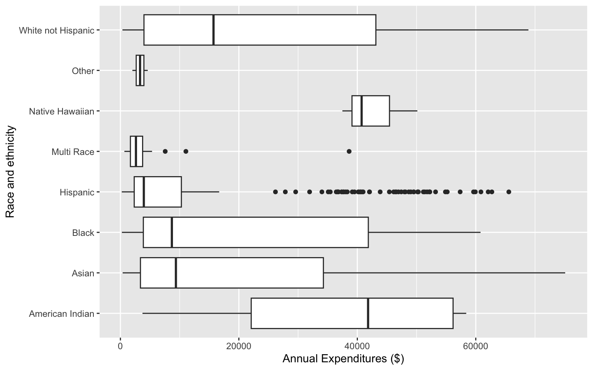
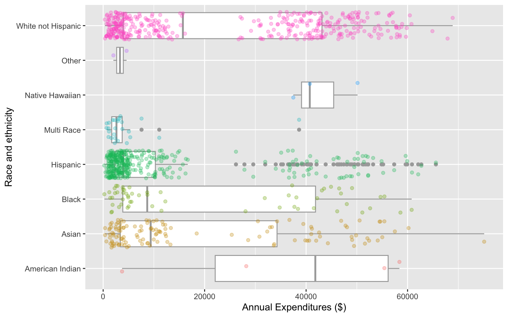
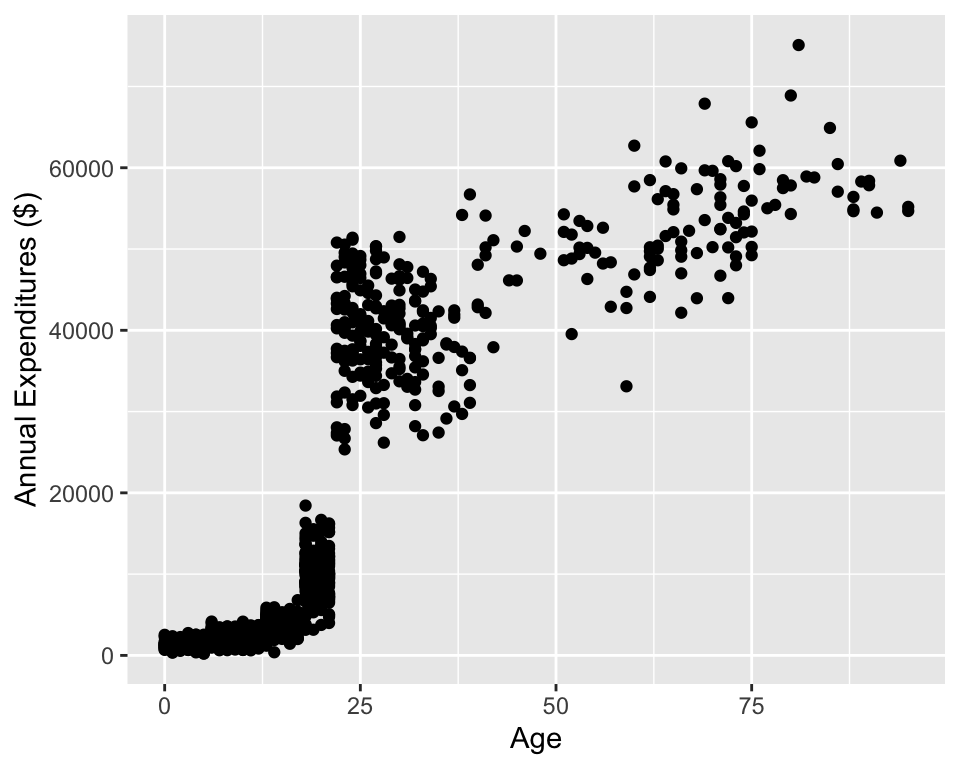

# run these every time you open Rstudio
library(tidyverse)
library(oibiostat)
library(ggridges)
library(janitor)
library(rstatix)
library(knitr)Warning: package 'knitr' was built under R version 4.6.1library(gtsummary) # NEW!!BSTA 511/611 Fall 2024 Day 5, OHSU
Meike Niederhausen, PhD
October 16, 2024
Warning: package 'knitr' was built under R version 4.6.1In the US, individuals with developmental disabilities typically receive services and support from state governments.
Dataset dds.discr
Previous research
Result: an allegation of ethnic discrimination was brought against the California DDS.
Question: Are the data sufficient evidence of ethnic discrimination?
See Section 1.7.1 for more details
dds.discr dataset from oibiostat packageThe textbook’s datasets are in the R package oibiostat
Make sure the oibiostat package is installed before running the code below.
Load the oibiostat package and the dataset dds.discr
the code below needs to be run every time you restart R or render a Qmd file
dds.discr using data("dds.discr"), you will see dds.discr in the Data list of the Environment window.[1] 1000 6[1] "id" "age.cohort" "age" "gender" "expenditures"
[6] "ethnicity" [1] 1000str()str() to get information about variable types in a dataset.tibble instead of a data.frametibble [1,000 × 6] (S3: tbl_df/tbl/data.frame)
$ id : int [1:1000] 10210 10409 10486 10538 10568 10690 10711 10778 10820 10823 ...
$ age.cohort : Factor w/ 6 levels "0-5","6-12","13-17",..: 3 5 1 4 3 3 3 3 3 3 ...
$ age : int [1:1000] 17 37 3 19 13 15 13 17 14 13 ...
$ gender : Factor w/ 2 levels "Female","Male": 1 2 2 1 2 1 1 2 1 2 ...
$ expenditures: int [1:1000] 2113 41924 1454 6400 4412 4566 3915 3873 5021 2887 ...
$ ethnicity : Factor w/ 8 levels "American Indian",..: 8 8 4 4 8 4 8 3 8 4 ...
- attr(*, "spec")=
.. cols(
.. ID = col_integer(),
.. `Age Cohort` = col_character(),
.. Age = col_integer(),
.. Gender = col_character(),
.. Expenditures = col_integer(),
.. Ethnicity = col_character()
.. )glimpse()New: glimpse()
glimpse() from the tidyverse package (technically it’s from the dplyr package) to get information about variable types.glimpse() tends to have nicer output for tibbles than str()Rows: 1,000
Columns: 6
$ id <int> 10210, 10409, 10486, 10538, 10568, 10690, 10711, 10778, 1…
$ age.cohort <fct> 13-17, 22-50, 0-5, 18-21, 13-17, 13-17, 13-17, 13-17, 13-…
$ age <int> 17, 37, 3, 19, 13, 15, 13, 17, 14, 13, 13, 14, 15, 17, 20…
$ gender <fct> Female, Male, Male, Female, Male, Female, Female, Male, F…
$ expenditures <int> 2113, 41924, 1454, 6400, 4412, 4566, 3915, 3873, 5021, 28…
$ ethnicity <fct> White not Hispanic, White not Hispanic, Hispanic, Hispani…summary()summary() to get summary information about variables id age.cohort age gender expenditures
Min. :10210 0-5 : 82 Min. : 0.0 Female:503 Min. : 222
1st Qu.:31809 6-12 :175 1st Qu.:12.0 Male :497 1st Qu.: 2899
Median :55384 13-17:212 Median :18.0 Median : 7026
Mean :54663 18-21:199 Mean :22.8 Mean :18066
3rd Qu.:76135 22-50:226 3rd Qu.:26.0 3rd Qu.:37713
Max. :99898 51+ :106 Max. :95.0 Max. :75098
ethnicity
White not Hispanic:401
Hispanic :376
Asian :129
Black : 59
Multi Race : 26
American Indian : 4
(Other) : 5 tbl_summary()tbl_summary() from the gtsummary package to get summary information| Characteristic | N = 1,0001 |
|---|---|
| id | 55,385 (31,759, 76,205) |
| age.cohort | |
| 0-5 | 82 (8.2%) |
| 6-12 | 175 (18%) |
| 13-17 | 212 (21%) |
| 18-21 | 199 (20%) |
| 22-50 | 226 (23%) |
| 51+ | 106 (11%) |
| age | 18 (12, 26) |
| gender | |
| Female | 503 (50%) |
| Male | 497 (50%) |
| expenditures | 7,026 (2,898, 37,718) |
| ethnicity | |
| American Indian | 4 (0.4%) |
| Asian | 129 (13%) |
| Black | 59 (5.9%) |
| Hispanic | 376 (38%) |
| Multi Race | 26 (2.6%) |
| Native Hawaiian | 3 (0.3%) |
| Other | 2 (0.2%) |
| White not Hispanic | 401 (40%) |
| 1 Median (Q1, Q3); n (%) | |
ggplotWhat is being measured on the vertical axes?
Warning: `stat(density)` was deprecated in ggplot2 3.4.0.
ℹ Please use `after_stat(density)` instead.What is being measured on the vertical axes?
What is being measured on the vertical axes?

Can you determine the following using boxplots?

Can you determine the following using boxplots?
x = expenditures
x = log(expenditures)

Response vs. explanatory variables (Section 1.2.3) - A response variable measures the outcome of interest in a study - A study will typically examine whether the values of a response variable differ as values of an explanatory variable change
Describe the association between the variables
The (Peasron) correlation coefficient of variables \(x\) and \(y\) can be computed using the formula \[r = \frac{1}{n-1}\sum_{i=1}^{n}\Big(\frac{x_i - \bar{x}}{s_x}\Big)\Big(\frac{y_i - \bar{y}}{s_y}\Big)\] where * \((x_1,y_1),(x_2,y_2),...,(x_n,y_n)\) are the \(n\) paired values of the variables \(x\) and \(y\) * \(s_x\) and \(s_y\) are the sample standard deviations of the variables \(x\) and \(y\), respectively
Counts
percentages
Side-by-side bar plot
count()count is from the dplyr package# A tibble: 8 × 2
ethnicity n
<fct> <int>
1 American Indian 4
2 Asian 129
3 Black 59
4 Hispanic 376
5 Multi Race 26
6 Native Hawaiian 3
7 Other 2
8 White not Hispanic 401# A tibble: 35 × 3
ethnicity age.cohort n
<fct> <fct> <int>
1 American Indian 13-17 1
2 American Indian 22-50 1
3 American Indian 51+ 2
4 Asian 0-5 8
5 Asian 6-12 18
6 Asian 13-17 20
7 Asian 18-21 41
8 Asian 22-50 29
9 Asian 51+ 13
10 Black 0-5 3
# ℹ 25 more rows%>%The pipe operator %>% strings together commands to be performed sequentially
# A tibble: 3 × 6
id age.cohort age gender expenditures ethnicity
<int> <fct> <int> <fct> <int> <fct>
1 10210 13-17 17 Female 2113 White not Hispanic
2 10409 22-50 37 Male 41924 White not Hispanic
3 10486 0-5 3 Male 1454 Hispanic id age.cohort age gender expenditures
Min. :10210 0-5 :1 Min. : 3 Female:1 Min. : 1454
1st Qu.:10310 6-12 :0 1st Qu.:10 Male :2 1st Qu.: 1784
Median :10409 13-17:1 Median :17 Median : 2113
Mean :10368 18-21:0 Mean :19 Mean :15164
3rd Qu.:10448 22-50:1 3rd Qu.:27 3rd Qu.:22018
Max. :10486 51+ :0 Max. :37 Max. :41924
ethnicity
White not Hispanic:2
Hispanic :1
American Indian :0
Asian :0
Black :0
Multi Race :0
(Other) :0 janitor package’s tabyl function ethnicity n percent
American Indian 4 0.004
Asian 129 0.129
Black 59 0.059
Hispanic 376 0.376
Multi Race 26 0.026
Native Hawaiian 3 0.003
Other 2 0.002
White not Hispanic 401 0.401adorn_ your table!
ethnicity n percent
American Indian 4 0.40%
Asian 129 12.90%
Black 59 5.90%
Hispanic 376 37.60%
Multi Race 26 2.60%
Native Hawaiian 3 0.30%
Other 2 0.20%
White not Hispanic 401 40.10%
Total 1000 100.00%A relative frequency table shows proportions (or percentages) instead of counts
Below I removed (deselected) the counts column (n) to create a relative frequency table
ethnicity percent
American Indian 0.40%
Asian 12.90%
Black 5.90%
Hispanic 37.60%
Multi Race 2.60%
Native Hawaiian 0.30%
Other 0.20%
White not Hispanic 40.10%
Total 100.00% ethnicity Female Male Total
American Indian 3 1 4
Asian 61 68 129
Black 26 33 59
Hispanic 192 184 376
Multi Race 13 13 26
Native Hawaiian 2 1 3
Other 1 1 2
White not Hispanic 205 196 401
Total 503 497 1000 ethnicity 0-5 6-12 13-17 18-21 22-50 51+
American Indian 0% (0) 0% (0) 25% (1) 0% (0) 25% (1) 50% (2)
Asian 6% (8) 14% (18) 16% (20) 32% (41) 22% (29) 10% (13)
Black 5% (3) 19% (11) 20% (12) 15% (9) 29% (17) 12% (7)
Hispanic 12% (44) 24% (91) 27% (103) 21% (78) 11% (43) 5% (17)
Multi Race 27% (7) 35% (9) 27% (7) 8% (2) 4% (1) 0% (0)
Native Hawaiian 0% (0) 0% (0) 0% (0) 0% (0) 67% (2) 33% (1)
Other 0% (0) 0% (0) 100% (2) 0% (0) 0% (0) 0% (0)
White not Hispanic 5% (20) 11% (46) 17% (67) 17% (69) 33% (133) 16% (66)
Total 8% (82) 18% (175) 21% (212) 20% (199) 23% (226) 11% (106)[1] 18065.79# A tibble: 1 × 3
ave SD med
<dbl> <dbl> <dbl>
1 18066. 19543. 7026# A tibble: 8 × 4
ethnicity ave SD med
<fct> <dbl> <dbl> <dbl>
1 American Indian 36438. 25694. 41818.
2 Asian 18392. 19209. 9369
3 Black 20885. 20549. 8687
4 Hispanic 11066. 15630. 3952
5 Multi Race 4457. 7332. 2622
6 Native Hawaiian 42782. 6576. 40727
7 Other 3316. 1836. 3316.
8 White not Hispanic 24698. 20604. 15718 get_summary_stats() from rstatix package# A tibble: 3 × 13
variable n min max median q1 q3 iqr mad mean sd
<fct> <dbl> <dbl> <dbl> <dbl> <dbl> <dbl> <dbl> <dbl> <dbl> <dbl>
1 id 1000 10210 99898 55384. 31809. 76135. 44326 3.27e4 5.47e4 2.56e4
2 age 1000 0 95 18 12 26 14 1.04e1 2.28e1 1.85e1
3 expenditures 1000 222 75098 7026 2899. 37713. 34814 7.76e3 1.81e4 1.95e4
# ℹ 2 more variables: se <dbl>, ci <dbl># A tibble: 8 × 11
ethnicity variable n min max median iqr mean sd se ci
<fct> <fct> <dbl> <dbl> <dbl> <dbl> <dbl> <dbl> <dbl> <dbl> <dbl>
1 American… expendi… 4 3726 58392 41818. 34085. 36438. 25694. 12847. 40885.
2 Asian expendi… 129 374 75098 9369 30892 18392. 19209. 1691. 3346.
3 Black expendi… 59 240 60808 8687 37987 20885. 20549. 2675. 5355.
4 Hispanic expendi… 376 222 65581 3952 7961. 11066. 15630. 806. 1585.
5 Multi Ra… expendi… 26 669 38619 2622 2060. 4457. 7332. 1438. 2962.
6 Native H… expendi… 3 37479 50141 40727 6331 42782. 6576. 3797. 16337.
7 Other expendi… 2 2018 4615 3316. 1298. 3316. 1836. 1298. 16499.
8 White no… expendi… 401 340 68890 15718 39157 24698. 20604. 1029. 2023.Use kable() from the knitr package.
| variable | n | min | max | median | q1 | q3 | iqr | mad | mean | sd | se | ci |
|---|---|---|---|---|---|---|---|---|---|---|---|---|
| id | 1000 | 10210 | 99898 | 55384.5 | 31808.75 | 76134.75 | 44326 | 32734.325 | 54662.85 | 25643.673 | 810.924 | 1591.310 |
| age | 1000 | 0 | 95 | 18.0 | 12.00 | 26.00 | 14 | 10.378 | 22.80 | 18.462 | 0.584 | 1.146 |
| expenditures | 1000 | 222 | 75098 | 7026.0 | 2898.75 | 37712.75 | 34814 | 7760.670 | 18065.79 | 19542.831 | 617.999 | 1212.724 |
| ethnicity | variable | n | min | max | median | iqr | mean | sd | se | ci |
|---|---|---|---|---|---|---|---|---|---|---|
| American Indian | expenditures | 4 | 3726 | 58392 | 41817.5 | 34085.25 | 36438.250 | 25693.912 | 12846.956 | 40884.748 |
| Asian | expenditures | 129 | 374 | 75098 | 9369.0 | 30892.00 | 18392.372 | 19209.225 | 1691.278 | 3346.482 |
| Black | expenditures | 59 | 240 | 60808 | 8687.0 | 37987.00 | 20884.593 | 20549.274 | 2675.288 | 5355.170 |
| Hispanic | expenditures | 376 | 222 | 65581 | 3952.0 | 7961.25 | 11065.569 | 15629.847 | 806.048 | 1584.940 |
| Multi Race | expenditures | 26 | 669 | 38619 | 2622.0 | 2059.75 | 4456.731 | 7332.135 | 1437.950 | 2961.514 |
| Native Hawaiian | expenditures | 3 | 37479 | 50141 | 40727.0 | 6331.00 | 42782.333 | 6576.462 | 3796.922 | 16336.838 |
| Other | expenditures | 2 | 2018 | 4615 | 3316.5 | 1298.50 | 3316.500 | 1836.356 | 1298.500 | 16499.007 |
| White not Hispanic | expenditures | 401 | 340 | 68890 | 15718.0 | 39157.00 | 24697.549 | 20604.376 | 1028.933 | 2022.793 |
Case study: discrimination in developmental disability support (1.7.1)